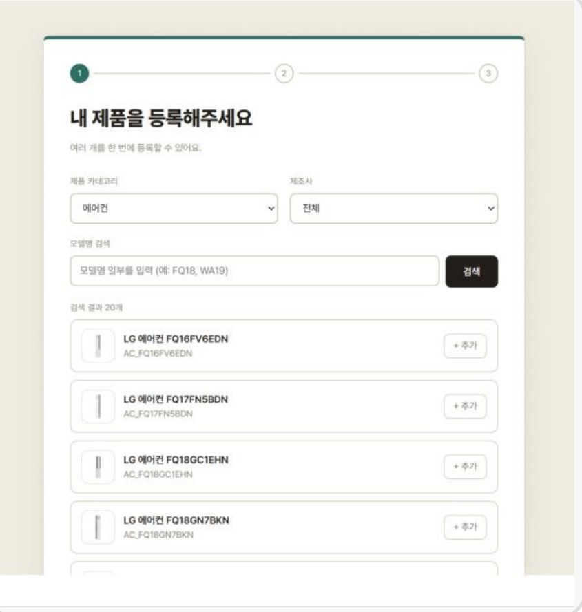
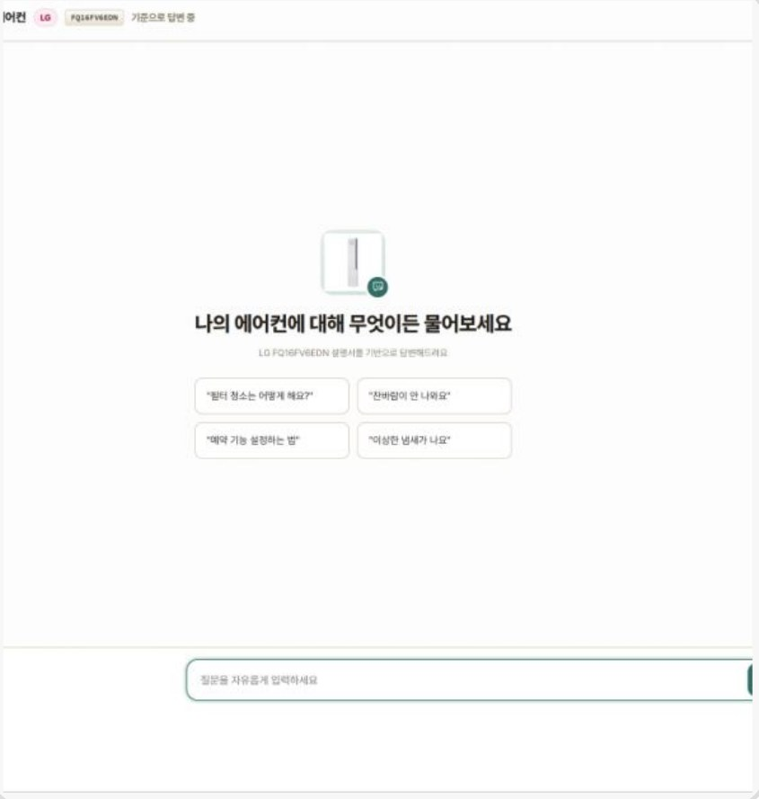
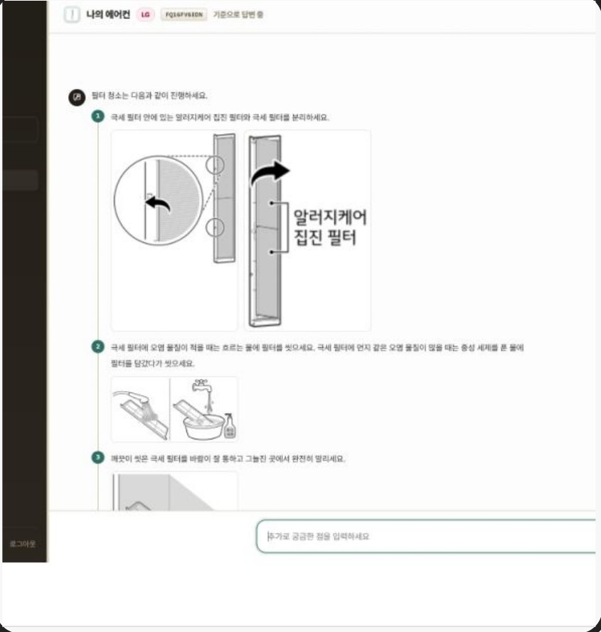
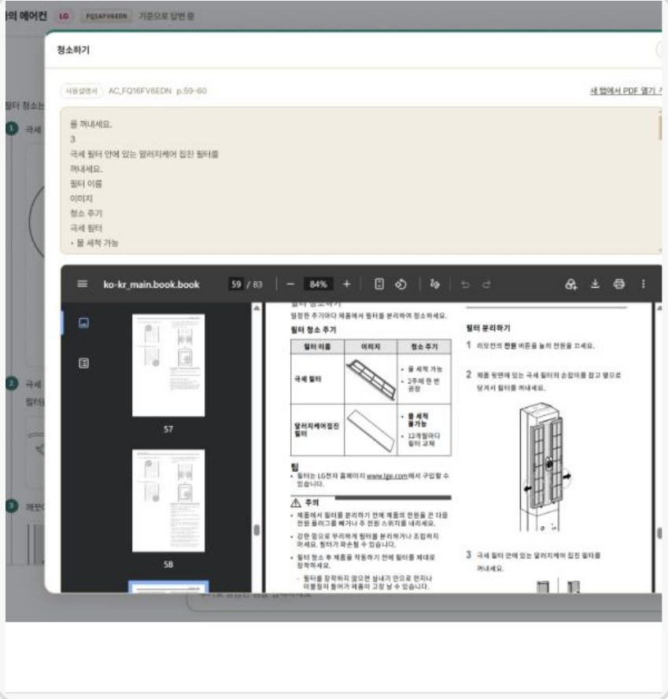

찾아드림 · LG CNS AI 캠퍼스 1조 · 2026
근거가 없으면 답하지 않는 가전 챗봇
LG·삼성 60개 모델의 사용설명서를 검색 대상으로 두고, 답변의 모든 문장에 출처 쪽 번호와 설명서 그림을 붙이는 RAG 챗봇입니다.
- 내 역할
- 서비스 기획 · 청킹 전략
- 기간
- 2026.09.07 – 09.28
- 팀
- 4인
- 산출물
- PRD · 기능정의서 · 와이어프레임
문제
증상은 아는데, 해결까지 넘어야 할 단계가 많다
"에어컨에 물이 새는데 설명서는 어딜 봐야 하죠?" 사용자는 증상만 압니다. 검색어를 고민하고, 정보를 찾고, 근거를 해석하고, 다시 확인하는 일을 모두 혼자 해야 합니다.
시간
검색과 재확인이 반복된다
정확성
다른 모델 정보가 섞일 수 있다
신뢰
찾은 답을 믿고 실행하기 어렵다
접근
버린 설명서를 다시 구하기 어렵다
판단
RAG는 모델별 설명서로 범위를 좁히고 출처까지 준다
지식iN은 광고성 글이 섞이고, 범용 AI는 없는 기능도 있는 것처럼 답하며, 제조사 AI는 모델명을 넣어도 설명서 기반 답변이 아니라고 밝힙니다. 세 방식을 같은 기준으로 비교했습니다.
| 기준 | 구글 · 네이버 검색 | 범용 LLM | 찾아드림 RAG |
|---|---|---|---|
| 사용자 표현 이해 | 직접 찾아야 함 | 강함 | 가능 |
| 내 모델 기준 답변 | 보장 어려움 | 보장 어려움 | 가능 |
| 답변 근거 확인 | 보장 어려움 | 보장 어려움 | 가능 |
| 근거 없을 때 보류 | 보장 어려움 | 보장 어려움 | 가능 |
| 답변까지 걸리는 시간 | 오래 걸림 | 빠름 | 빠름 |
주요 기능
사용자는 증상만 말하고, 탐색과 확인은 찾아드림이 맡는다
내 모델 설명서만 검색
제품을 한 번 등록하면 그 모델의 설명서 안에서만 근거를 찾습니다.
에러코드 정확 매칭
"CH05 떠요"처럼 코드를 물으면 RDB에서 정확히 찾아 원인과 조치를 답합니다.
쪽 번호 · 그림 · 원문
답변 줄마다 설명서 쪽 번호와 그림을 붙이고, PDF 원문으로 바로 확인할 수 있습니다.
근거가 없으면 보류
관련 근거가 기준에 못 미치면 추측하지 않고 "찾지 못했습니다"라고 답합니다.
화면
제품 등록 → 질문 → 답변 → 출처 확인

1 · 제품 등록
2 · 자연어 질문
3 · 모델별 답변
4 · 출처 확인설계 내 담당
설명서의 목차를 그대로 청크 단위로 쓴다
설명서에는 이미 "필터 분리하기 → 극세 필터 청소하기"처럼 목차 구조가 있습니다. 고정 길이로 자르면 한 절의 설명이 중간에 끊겨 답변이 반쪽이 되기 때문에, 목차 경계를 그대로 청크 단위로 썼습니다.
고정 길이로 자르면 · 절이 중간에 끊긴다
청크 3개 · 경계가 절 한가운데를 지난다
목차 단위로 자르면 · 절 하나가 청크 하나
청크 4개 · 700자 이상 · 15% 오버랩 · 목차 없는 PDF와 고장 신고 표는 예외 규칙
기획 산출물: 기능 요구사항 13개 · 화면 13개 · 기능 45개 정의, 와이어프레임 16개 화면
결과 · 팀 결과, 900문항 평가
가장 나쁜 실패인 "근거 없는 확신 답변"은 0건
| 판정 | round1 · 흔한 문의 | round2 · 세부 기능 | round3 · 앱 · 설치 |
|---|---|---|---|
| 성공 | 268 (89.3%) | 227 (75.7%) | 240 (80.0%) |
| 설명서에 없어 답하지 않음 | 29 (9.7%) | 71 (23.7%) | 56 (18.7%) |
| 근거가 있는데 포기 | 3 (1.0%) | 2 (0.7%) | 4 (1.3%) |
| 근거 없이 확신 | 0 | 0 | 0 |
5문항 × 60개 모델 × 3라운드. 설명서에 없는 내용을 묻는 경우도 있어 정답률 대신 4가지로 분류해 판정했습니다.